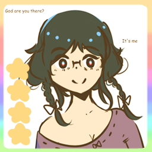

Midnight Haunts
Mori here! I'm a recent university graduate. I work at [REDACTED] agency as an exorcist (Just until I can find a full time job)!
Skills

Exorcism Services
We perform different types of exorcism services, including saging, salt purification, and prayer. Ghost icons created by Freepik - Flaticon
Paranormal Services
The ability to see ghosts and view their requests. Often times, the paranormal is happening right around you. How scary! Fear not, we can defeat any and all hauntings, together! Paranormal icons created by bearicons - Flaticon
Get In Touch
For those who are interested in my services, look only as far as my game.
Experience Game